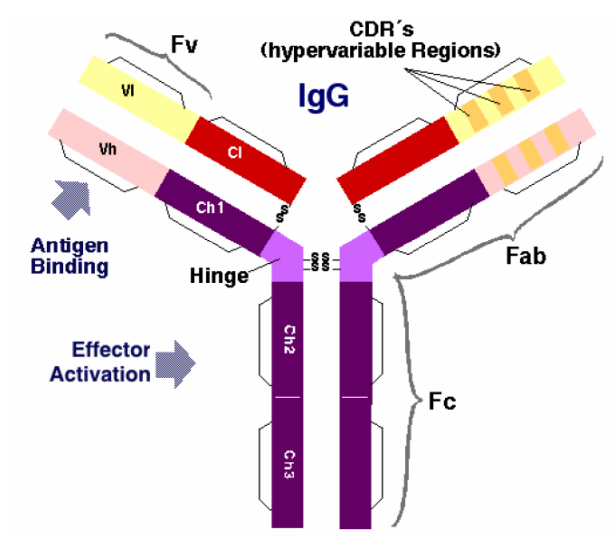
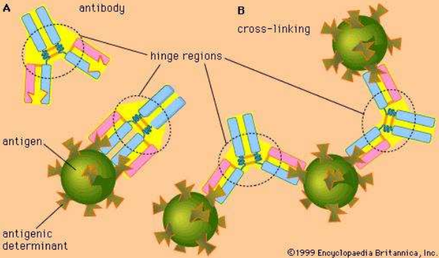
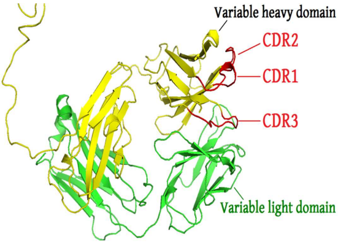
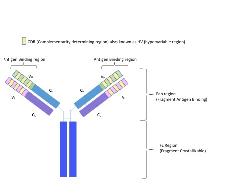

Last updated: 2023-06-27
Checks: 7 0
Knit directory: muse/
This reproducible R Markdown analysis was created with workflowr (version 1.7.0). The Checks tab describes the reproducibility checks that were applied when the results were created. The Past versions tab lists the development history.
Great! Since the R Markdown file has been committed to the Git repository, you know the exact version of the code that produced these results.
Great job! The global environment was empty. Objects defined in the global environment can affect the analysis in your R Markdown file in unknown ways. For reproduciblity it’s best to always run the code in an empty environment.
The command set.seed(20200712) was run prior to running
the code in the R Markdown file. Setting a seed ensures that any results
that rely on randomness, e.g. subsampling or permutations, are
reproducible.
Great job! Recording the operating system, R version, and package versions is critical for reproducibility.
Nice! There were no cached chunks for this analysis, so you can be confident that you successfully produced the results during this run.
Great job! Using relative paths to the files within your workflowr project makes it easier to run your code on other machines.
Great! You are using Git for version control. Tracking code development and connecting the code version to the results is critical for reproducibility.
The results in this page were generated with repository version c90d5b7. See the Past versions tab to see a history of the changes made to the R Markdown and HTML files.
Note that you need to be careful to ensure that all relevant files for
the analysis have been committed to Git prior to generating the results
(you can use wflow_publish or
wflow_git_commit). workflowr only checks the R Markdown
file, but you know if there are other scripts or data files that it
depends on. Below is the status of the Git repository when the results
were generated:
Ignored files:
Ignored: .Rhistory
Ignored: .Rproj.user/
Ignored: r_packages_4.1.2/
Ignored: r_packages_4.2.0/
Ignored: r_packages_4.2.2/
Ignored: r_packages_4.3.0/
Untracked files:
Untracked: analysis/cell_ranger.Rmd
Untracked: analysis/tss_xgboost.Rmd
Untracked: code/multiz100way/
Untracked: data/HG00702_SH089_CHSTrio.chr1.vcf.gz
Untracked: data/HG00702_SH089_CHSTrio.chr1.vcf.gz.tbi
Untracked: data/ncrna_NONCODE[v3.0].fasta.tar.gz
Untracked: data/ncrna_noncode_v3.fa
Untracked: data/netmhciipan.out.gz
Untracked: women.json
Unstaged changes:
Modified: analysis/graph.Rmd
Note that any generated files, e.g. HTML, png, CSS, etc., are not included in this status report because it is ok for generated content to have uncommitted changes.
These are the previous versions of the repository in which changes were
made to the R Markdown (analysis/antibody.Rmd) and HTML
(docs/antibody.html) files. If you’ve configured a remote
Git repository (see ?wflow_git_remote), click on the
hyperlinks in the table below to view the files as they were in that
past version.
| File | Version | Author | Date | Message |
|---|---|---|---|---|
| Rmd | c90d5b7 | Dave Tang | 2023-06-27 | CDR sequences |
| html | b707032 | Dave Tang | 2023-06-26 | Build site. |
| Rmd | 9161c86 | Dave Tang | 2023-06-26 | Learning about antibodies |
Notes based on the study: Development of a humanized monoclonal antibody (MEDI-493) with potent in vitro and in vivo activity against respiratory syncytial virus.
This study describes the generation of a humanised monoclonal antibody, MEDI-493, that recognises a conserved neutralising epitope on the F glycoprotein of RSV. Broad neutralisation of a panel of 57 clinical isolates of the RSV A and B subtypes was demonstrated.
Fusion glycoprotein F0 of Human respiratory syncytial virus A (strain A2).
>sp|P03420|FUS_HRSVA Fusion glycoprotein F0 OS=Human respiratory syncytial virus A (strain A2) OX=11259 GN=F PE=1 SV=1
MELLILKANAITTILTAVTFCFASGQNITEEFYQSTCSAVSKGYLSALRTGWYTSVITIE
LSNIKENKCNGTDAKVKLIKQELDKYKNAVTELQLLMQSTPPTNNRARRELPRFMNYTLN
NAKKTNVTLSKKRKRRFLGFLLGVGSAIASGVAVSKVLHLEGEVNKIKSALLSTNKAVVS
LSNGVSVLTSKVLDLKNYIDKQLLPIVNKQSCSISNIETVIEFQQKNNRLLEITREFSVN
AGVTTPVSTYMLT NSELLSLINDMPITNDQKKLMSNN VQIVRQQSYSIMSIIKEEVLAYV
VQLPLYGVIDTPCWKLHTSPLCTTNTKEGSNICLTRTDRGWYCDNAGSVSFFPQAETCKV
QSNRVFCDTMNSLTLPSEINLCNVDIFNPKYDCKIMTSKTDVSSSVITSLGAIVSCYGKT
KCTASNKNRGIIKTFSNGCDYVSNKGMDTVSVGNTLYYVNKQEGKSLYVKGEPIINFYDP
LVFPSDEFDASISQVNEKINQSLAFIRKSDELLHNVNAGKSTTNIMITTIIIVIIVILLS
LIAVGLLLYCKARSTPVTLSKDQLSGINNIAFSNDesign of humanised VL and VH segments based on murine monoclonal antibody 1129. Human framework regions were derived from K102 for VL. VH framework (FR1) region was derived from Cor; remaining framework regions were derived from CE-1 sequence.
VL.
FR1 CDR1 FR2 CDR2
DIQMTQSPSTLSASVGDRVTITC KCQLSVGYMH WYQQKPGKAPKLLIY DTSKLAS
FR3 CDR3 FR4
GVPSRFSGSGSGTEFTLTISSLQPDDFATYYC FQGSGYPFT FGGGTKLEIKVH.
FR1 CDR1 FR2 CDR2
QVTLRESGPALVKPTQTLTLTCTFSGFSLS TSGMSVG WIRQPPGKALEWLA DIWWDDKKDYNPSLKS
FR3 CDR3 FR4
RLTISKDTSKNQVVLKVTNMDPADTATYYCAR SMITNWYFDV WGAGTTVTVSSNotes from Analysing antibody sequence for recombinant antibody expression.



The framework region is a subdivision of the variable region (Fab) of the antibody. The variable region is composed of seven amino acid regions, four of which are framework regions (FR1-4) and three of which are hypervariable regions. The framework region makes up about 85% of the variable region. Located on the tips of the Y-shaped molecule, the framework regions are responsible for acting as a scaffold for the complementarity determining regions (CDR), also referred to as hypervariable regions, of the Fab. These CDRs are in direct contact with the antigen and are involved in binding antigen, while the framework regions support the binding of the CDR to the antigen and aid in maintaining the overall structure of the four variable domains on the antibody.

CDR-L1
CDR-L2
CDR-L3
CDR-H1
CDR-H2
CDR-H3
Leader sequence-FR1-CDR1-FR2-CDR2-FR3-CDR3-FR4-Constant region-Stop codon
sessionInfo()R version 4.3.0 (2023-04-21)
Platform: x86_64-pc-linux-gnu (64-bit)
Running under: Ubuntu 22.04.2 LTS
Matrix products: default
BLAS: /usr/lib/x86_64-linux-gnu/openblas-pthread/libblas.so.3
LAPACK: /usr/lib/x86_64-linux-gnu/openblas-pthread/libopenblasp-r0.3.20.so; LAPACK version 3.10.0
locale:
[1] LC_CTYPE=en_US.UTF-8 LC_NUMERIC=C
[3] LC_TIME=en_US.UTF-8 LC_COLLATE=en_US.UTF-8
[5] LC_MONETARY=en_US.UTF-8 LC_MESSAGES=en_US.UTF-8
[7] LC_PAPER=en_US.UTF-8 LC_NAME=C
[9] LC_ADDRESS=C LC_TELEPHONE=C
[11] LC_MEASUREMENT=en_US.UTF-8 LC_IDENTIFICATION=C
time zone: Etc/UTC
tzcode source: system (glibc)
attached base packages:
[1] stats graphics grDevices utils datasets methods base
other attached packages:
[1] lubridate_1.9.2 forcats_1.0.0 stringr_1.5.0 dplyr_1.1.2
[5] purrr_1.0.1 readr_2.1.4 tidyr_1.3.0 tibble_3.2.1
[9] ggplot2_3.4.2 tidyverse_2.0.0 workflowr_1.7.0
loaded via a namespace (and not attached):
[1] sass_0.4.5 utf8_1.2.3 generics_0.1.3 stringi_1.7.12
[5] hms_1.1.3 digest_0.6.31 magrittr_2.0.3 timechange_0.2.0
[9] evaluate_0.20 grid_4.3.0 fastmap_1.1.1 rprojroot_2.0.3
[13] jsonlite_1.8.5 processx_3.8.1 whisker_0.4.1 ps_1.7.5
[17] promises_1.2.0.1 httr_1.4.5 fansi_1.0.4 scales_1.2.1
[21] jquerylib_0.1.4 cli_3.6.1 rlang_1.1.0 munsell_0.5.0
[25] withr_2.5.0 cachem_1.0.7 yaml_2.3.7 tools_4.3.0
[29] tzdb_0.3.0 colorspace_2.1-0 httpuv_1.6.9 vctrs_0.6.2
[33] R6_2.5.1 lifecycle_1.0.3 git2r_0.32.0 fs_1.6.2
[37] pkgconfig_2.0.3 callr_3.7.3 pillar_1.9.0 bslib_0.4.2
[41] later_1.3.0 gtable_0.3.3 glue_1.6.2 Rcpp_1.0.10
[45] xfun_0.39 tidyselect_1.2.0 rstudioapi_0.14 knitr_1.42
[49] htmltools_0.5.5 rmarkdown_2.21 compiler_4.3.0 getPass_0.2-2